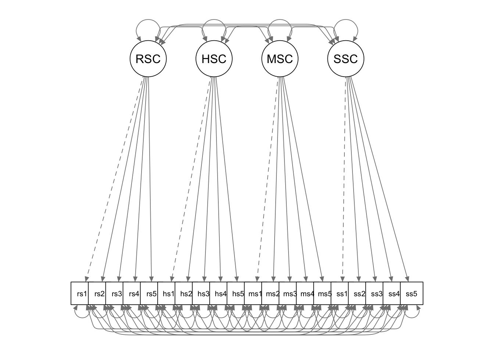
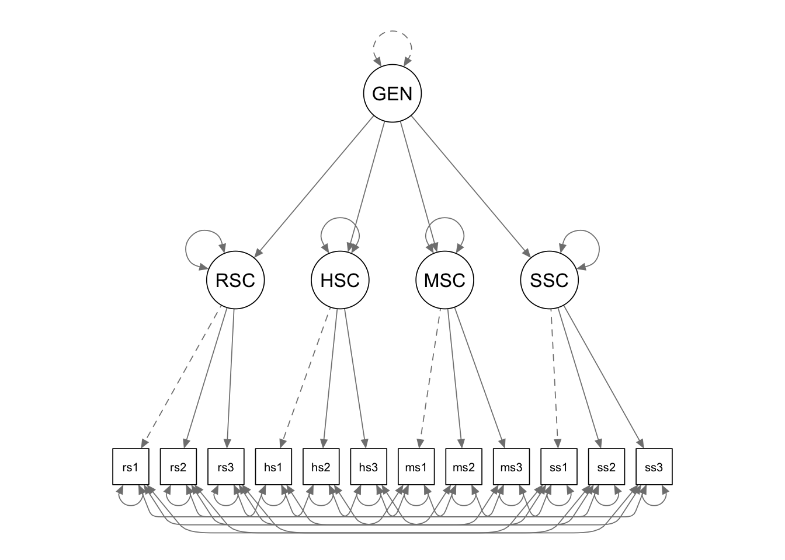
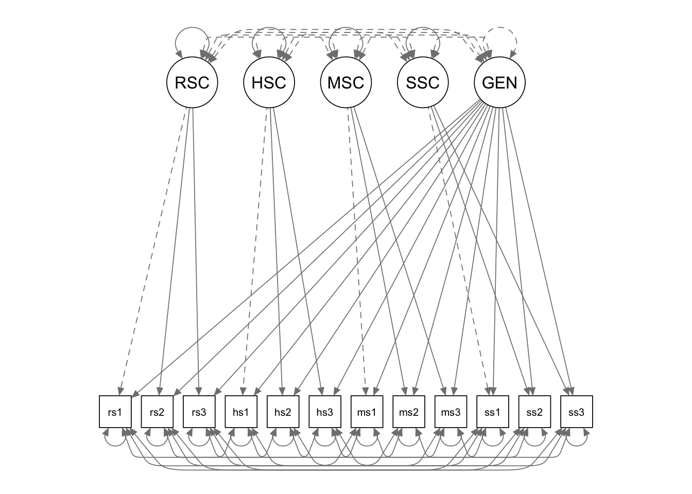

In this tutorial, we are going to use lavaan for confirmatory factor analysis. The examples correspond to the self-concept CFA example in your course slides.
library(lavaan)The data for this example is saved in a csv file named “proficiencyraw-female.csv”, which is provided as part of the course materials. You can use the read.table() function to read in a csv file. There are many different ways for you to supply the file path in the read.table() function call. Below I first set the working directory to the folder where my data is saved, and then I simply supply the name of the data file in the function call.
setwd(mypath) # change it to the path of your own data folder
data <- read.table("proficiencyraw-female.csv", sep=",", header=F)
# give variable names
colnames(data) <- c(paste0("goals",1:6),
paste0("rsc",1:5),
paste0("hsc",1:5),
paste0("msc",1:5),
paste0("ssc",1:5),
"SATvoc",
"SATcomp",
"SATlang",
"SATmath",
"SATprob",
"SATproc")You can take a look at the data and get the sample statistics.
head(data)## goals1 goals2 goals3 goals4 goals5 goals6 rsc1 rsc2 rsc3 rsc4 rsc5 hsc1 hsc2 hsc3 hsc4
## 1 1 1 1 1 1 1 3 3 5 3 4 5 4 6 4
## 2 3 3 6 3 2 2 3 4 5 5 3 3 4 3 3
## 3 3 5 5 5 3 4 4 6 3 4 5 5 4 6 3
## 4 4 4 4 6 4 6 2 3 3 4 4 2 4 2 3
## 5 2 3 3 3 4 3 3 3 4 2 3 5 5 6 5
## 6 4 4 4 3 3 5 3 4 4 4 3 2 3 1 4
## hsc5 msc1 msc2 msc3 msc4 msc5 ssc1 ssc2 ssc3 ssc4 ssc5 SATvoc SATcomp SATlang SATmath
## 1 6 4 4 2 3 5 4 4 3 3 6 670 690 590 660
## 2 4 1 1 2 1 1 1 1 1 1 1 700 680 640 640
## 3 6 3 3 5 4 2 1 2 2 2 3 710 690 680 630
## 4 4 5 5 4 3 5 3 2 4 4 4 740 720 710 720
## 5 4 3 2 3 2 2 4 3 3 3 3 680 700 650 620
## 6 4 4 4 5 4 2 4 4 4 4 4 710 670 710 730
## SATprob SATproc
## 1 680 700
## 2 610 640
## 3 620 650
## 4 710 790
## 5 630 640
## 6 670 670str(data)## 'data.frame': 1000 obs. of 32 variables:
## $ goals1 : int 1 3 3 4 2 4 4 3 2 3 ...
## $ goals2 : int 1 3 5 4 3 4 4 5 1 3 ...
## $ goals3 : int 1 6 5 4 3 4 4 3 1 4 ...
## $ goals4 : int 1 3 5 6 3 3 4 4 4 3 ...
## $ goals5 : int 1 2 3 4 4 3 3 4 3 2 ...
## $ goals6 : int 1 2 4 6 3 5 2 4 2 4 ...
## $ rsc1 : int 3 3 4 2 3 3 4 4 2 3 ...
## $ rsc2 : int 3 4 6 3 3 4 5 4 3 2 ...
## $ rsc3 : int 5 5 3 3 4 4 6 5 2 5 ...
## $ rsc4 : int 3 5 4 4 2 4 5 4 3 3 ...
## $ rsc5 : int 4 3 5 4 3 3 4 4 3 3 ...
## $ hsc1 : int 5 3 5 2 5 2 3 3 3 3 ...
## $ hsc2 : int 4 4 4 4 5 3 4 3 4 3 ...
## $ hsc3 : int 6 3 6 2 6 1 4 4 2 4 ...
## $ hsc4 : int 4 3 3 3 5 4 3 3 5 3 ...
## $ hsc5 : int 6 4 6 4 4 4 3 4 2 3 ...
## $ msc1 : int 4 1 3 5 3 4 1 3 5 4 ...
## $ msc2 : int 4 1 3 5 2 4 2 2 4 3 ...
## $ msc3 : int 2 2 5 4 3 5 4 3 4 4 ...
## $ msc4 : int 3 1 4 3 2 4 3 3 5 6 ...
## $ msc5 : int 5 1 2 5 2 2 1 4 5 4 ...
## $ ssc1 : int 4 1 1 3 4 4 2 3 6 6 ...
## $ ssc2 : int 4 1 2 2 3 4 1 2 6 5 ...
## $ ssc3 : int 3 1 2 4 3 4 3 5 6 5 ...
## $ ssc4 : int 3 1 2 4 3 4 3 2 6 6 ...
## $ ssc5 : int 6 1 3 4 3 4 4 4 6 5 ...
## $ SATvoc : int 670 700 710 740 680 710 700 770 660 720 ...
## $ SATcomp: int 690 680 690 720 700 670 710 740 660 710 ...
## $ SATlang: int 590 640 680 710 650 710 690 710 620 740 ...
## $ SATmath: int 660 640 630 720 620 730 630 680 670 720 ...
## $ SATprob: int 680 610 620 710 630 670 640 670 730 660 ...
## $ SATproc: num 700 640 650 790 640 670 640 710 690 740 ...# sample means
apply(data, 2, mean)## goals1 goals2 goals3 goals4 goals5 goals6 rsc1 rsc2 rsc3 rsc4 rsc5
## 3.297 3.193 3.443 3.631 3.580 3.273 3.308 3.657 3.645 3.230 3.558
## hsc1 hsc2 hsc3 hsc4 hsc5 msc1 msc2 msc3 msc4 msc5 ssc1
## 3.636 3.694 3.310 3.233 3.633 3.349 3.162 3.528 3.608 3.651 3.269
## ssc2 ssc3 ssc4 ssc5 SATvoc SATcomp SATlang SATmath SATprob SATproc
## 3.130 3.419 3.531 3.621 709.470 696.670 669.170 685.340 679.100 694.600# sample correlations
knitr::kable(cor(data))| goals1 | goals2 | goals3 | goals4 | goals5 | goals6 | rsc1 | rsc2 | rsc3 | rsc4 | rsc5 | hsc1 | hsc2 | hsc3 | hsc4 | hsc5 | msc1 | msc2 | msc3 | msc4 | msc5 | ssc1 | ssc2 | ssc3 | ssc4 | ssc5 | SATvoc | SATcomp | SATlang | SATmath | SATprob | SATproc | |
|---|---|---|---|---|---|---|---|---|---|---|---|---|---|---|---|---|---|---|---|---|---|---|---|---|---|---|---|---|---|---|---|---|
| goals1 | 1.0000000 | 0.4984734 | 0.4316809 | 0.4262980 | 0.4990337 | 0.4480392 | 0.1422290 | 0.1487401 | 0.1241138 | 0.1328809 | 0.1014088 | 0.1107567 | 0.1601568 | 0.1092240 | 0.1323793 | 0.1363724 | 0.1403547 | 0.1422252 | 0.1646180 | 0.1656449 | 0.1603022 | 0.1993837 | 0.2114089 | 0.1662243 | 0.1671950 | 0.1525947 | 0.2868853 | 0.3171632 | 0.2648598 | 0.3453557 | 0.3038260 | 0.2593849 |
| goals2 | 0.4984734 | 1.0000000 | 0.5166747 | 0.4782157 | 0.6460580 | 0.6005399 | 0.1223056 | 0.1493850 | 0.1317064 | 0.1445373 | 0.1331729 | 0.1107509 | 0.1477712 | 0.1262975 | 0.1100415 | 0.1460844 | 0.1627076 | 0.1786852 | 0.1467795 | 0.1990951 | 0.1919964 | 0.2057184 | 0.2379812 | 0.1867617 | 0.1824136 | 0.1766039 | 0.3677185 | 0.3925285 | 0.3243639 | 0.3854782 | 0.3593538 | 0.3299263 |
| goals3 | 0.4316809 | 0.5166747 | 1.0000000 | 0.4764176 | 0.5565764 | 0.5295828 | 0.1617445 | 0.2007393 | 0.1584438 | 0.2223717 | 0.1260219 | 0.1400594 | 0.1698771 | 0.1173816 | 0.1321849 | 0.1642993 | 0.1479803 | 0.1531607 | 0.1600910 | 0.1828040 | 0.1605247 | 0.1843992 | 0.1907242 | 0.1347109 | 0.1856965 | 0.1700414 | 0.3363255 | 0.3615585 | 0.3150874 | 0.3363440 | 0.2813240 | 0.2784864 |
| goals4 | 0.4262980 | 0.4782157 | 0.4764176 | 1.0000000 | 0.5264927 | 0.5141686 | 0.1056856 | 0.1769289 | 0.1405105 | 0.1699632 | 0.0972777 | 0.1076487 | 0.1768722 | 0.1043960 | 0.1174805 | 0.1640548 | 0.1918944 | 0.1927983 | 0.1804878 | 0.1669317 | 0.2049644 | 0.1633997 | 0.1940698 | 0.1724584 | 0.1603435 | 0.1724098 | 0.3351568 | 0.3210550 | 0.3273535 | 0.3372945 | 0.3087815 | 0.2957320 |
| goals5 | 0.4990337 | 0.6460580 | 0.5565764 | 0.5264927 | 1.0000000 | 0.6567764 | 0.1613645 | 0.1951062 | 0.1655805 | 0.1675968 | 0.1542425 | 0.1377695 | 0.1796230 | 0.1435251 | 0.1497996 | 0.1552484 | 0.2419078 | 0.2411941 | 0.2254517 | 0.2662088 | 0.2605662 | 0.2424692 | 0.2677065 | 0.2334473 | 0.2051471 | 0.2342579 | 0.4232350 | 0.4384206 | 0.3645643 | 0.4847020 | 0.4582476 | 0.4039900 |
| goals6 | 0.4480392 | 0.6005399 | 0.5295828 | 0.5141686 | 0.6567764 | 1.0000000 | 0.1540626 | 0.1644541 | 0.1627319 | 0.1413994 | 0.1503639 | 0.1180273 | 0.1508966 | 0.1298865 | 0.1407424 | 0.1644053 | 0.1783397 | 0.1768569 | 0.1676383 | 0.2004590 | 0.1826004 | 0.2400338 | 0.2452707 | 0.2202631 | 0.2154996 | 0.2247226 | 0.3763668 | 0.3949747 | 0.3355399 | 0.4132551 | 0.3802904 | 0.3551056 |
| rsc1 | 0.1422290 | 0.1223056 | 0.1617445 | 0.1056856 | 0.1613645 | 0.1540626 | 1.0000000 | 0.5017493 | 0.3986158 | 0.5097268 | 0.4249257 | 0.3213927 | 0.2948016 | 0.2304092 | 0.2308503 | 0.2922148 | -0.1729800 | -0.1501885 | -0.1231215 | -0.1608403 | -0.1756073 | -0.0746065 | -0.1082674 | -0.0690387 | -0.1023302 | -0.0757470 | 0.3922337 | 0.4139355 | 0.3028179 | -0.0490436 | -0.0312166 | -0.0253831 |
| rsc2 | 0.1487401 | 0.1493850 | 0.2007393 | 0.1769289 | 0.1951062 | 0.1644541 | 0.5017493 | 1.0000000 | 0.4842894 | 0.5954733 | 0.5320756 | 0.2753250 | 0.3704630 | 0.2609932 | 0.2203612 | 0.2911659 | -0.1508006 | -0.1345535 | -0.0917328 | -0.1285771 | -0.1403089 | -0.1006961 | -0.0621370 | -0.0480805 | -0.0751646 | -0.0886685 | 0.4471132 | 0.4558799 | 0.3788010 | -0.0069600 | -0.0089071 | -0.0289518 |
| rsc3 | 0.1241138 | 0.1317064 | 0.1584438 | 0.1405105 | 0.1655805 | 0.1627319 | 0.3986158 | 0.4842894 | 1.0000000 | 0.5405869 | 0.4089965 | 0.2373983 | 0.2993391 | 0.2957383 | 0.2051643 | 0.2885543 | -0.1228452 | -0.0968881 | -0.0723227 | -0.1243393 | -0.1127203 | -0.0839290 | -0.0867640 | -0.0375020 | -0.1105415 | -0.0729521 | 0.4310884 | 0.3967716 | 0.3445199 | 0.0032729 | 0.0234035 | 0.0057565 |
| rsc4 | 0.1328809 | 0.1445373 | 0.2223717 | 0.1699632 | 0.1675968 | 0.1413994 | 0.5097268 | 0.5954733 | 0.5405869 | 1.0000000 | 0.5158959 | 0.2535649 | 0.2930776 | 0.2589948 | 0.2796479 | 0.2938067 | -0.1522378 | -0.1784008 | -0.1301874 | -0.1493139 | -0.1302031 | -0.1420531 | -0.1109224 | -0.1128769 | -0.1058610 | -0.0893562 | 0.4661318 | 0.4910701 | 0.3694188 | -0.0345863 | -0.0094080 | -0.0377544 |
| rsc5 | 0.1014088 | 0.1331729 | 0.1260219 | 0.0972777 | 0.1542425 | 0.1503639 | 0.4249257 | 0.5320756 | 0.4089965 | 0.5158959 | 1.0000000 | 0.2457826 | 0.2318252 | 0.2050005 | 0.1914773 | 0.3049334 | -0.1383494 | -0.1599328 | -0.1090568 | -0.1560110 | -0.0960083 | -0.0912645 | -0.0580965 | -0.0372625 | -0.0575142 | 0.0136534 | 0.3894136 | 0.3860547 | 0.3231900 | 0.0080783 | 0.0138249 | 0.0031184 |
| hsc1 | 0.1107567 | 0.1107509 | 0.1400594 | 0.1076487 | 0.1377695 | 0.1180273 | 0.3213927 | 0.2753250 | 0.2373983 | 0.2535649 | 0.2457826 | 1.0000000 | 0.5590349 | 0.5005412 | 0.4416623 | 0.5776718 | -0.0657446 | -0.0736491 | -0.0603979 | -0.0688227 | -0.0632488 | -0.0259742 | -0.0374391 | -0.0401788 | -0.0478196 | -0.0522978 | 0.3681669 | 0.3786434 | 0.2926290 | 0.0058209 | 0.0112698 | 0.0067527 |
| hsc2 | 0.1601568 | 0.1477712 | 0.1698771 | 0.1768722 | 0.1796230 | 0.1508966 | 0.2948016 | 0.3704630 | 0.2993391 | 0.2930776 | 0.2318252 | 0.5590349 | 1.0000000 | 0.5537792 | 0.5185307 | 0.6612963 | -0.1010249 | -0.0662750 | -0.0880060 | -0.0985142 | -0.0728302 | -0.0374547 | -0.0227817 | -0.0219909 | -0.0192483 | -0.0155786 | 0.4217492 | 0.4296131 | 0.3227092 | 0.0278431 | 0.0270409 | 0.0073325 |
| hsc3 | 0.1092240 | 0.1262975 | 0.1173816 | 0.1043960 | 0.1435251 | 0.1298865 | 0.2304092 | 0.2609932 | 0.2957383 | 0.2589948 | 0.2050005 | 0.5005412 | 0.5537792 | 1.0000000 | 0.4828249 | 0.5668899 | -0.1061126 | -0.0750507 | -0.0769435 | -0.0533170 | -0.0594436 | -0.0297411 | -0.0024579 | 0.0158288 | 0.0046210 | -0.0175483 | 0.3507636 | 0.3781412 | 0.2671380 | 0.0306024 | 0.0150347 | 0.0126959 |
| hsc4 | 0.1323793 | 0.1100415 | 0.1321849 | 0.1174805 | 0.1497996 | 0.1407424 | 0.2308503 | 0.2203612 | 0.2051643 | 0.2796479 | 0.1914773 | 0.4416623 | 0.5185307 | 0.4828249 | 1.0000000 | 0.5216470 | -0.0912189 | -0.0633096 | -0.0447657 | -0.0359265 | -0.0635785 | -0.0014948 | 0.0015818 | 0.0293269 | 0.0603351 | 0.0307218 | 0.3424543 | 0.3453749 | 0.2430013 | 0.0164295 | 0.0299100 | 0.0097698 |
| hsc5 | 0.1363724 | 0.1460844 | 0.1642993 | 0.1640548 | 0.1552484 | 0.1644053 | 0.2922148 | 0.2911659 | 0.2885543 | 0.2938067 | 0.3049334 | 0.5776718 | 0.6612963 | 0.5668899 | 0.5216470 | 1.0000000 | -0.1113893 | -0.0923340 | -0.0782427 | -0.1121066 | -0.0693251 | -0.0521312 | -0.0256353 | -0.0277508 | -0.0355175 | -0.0182785 | 0.4383122 | 0.4410601 | 0.3279912 | 0.0306113 | 0.0380699 | -0.0013639 |
| msc1 | 0.1403547 | 0.1627076 | 0.1479803 | 0.1918944 | 0.2419078 | 0.1783397 | -0.1729800 | -0.1508006 | -0.1228452 | -0.1522378 | -0.1383494 | -0.0657446 | -0.1010249 | -0.1061126 | -0.0912189 | -0.1113893 | 1.0000000 | 0.6656454 | 0.6350918 | 0.6423998 | 0.6442893 | 0.4923504 | 0.4680239 | 0.3814626 | 0.4120059 | 0.4126636 | 0.0747324 | 0.0829218 | 0.0881525 | 0.5558400 | 0.5436105 | 0.5125294 |
| msc2 | 0.1422252 | 0.1786852 | 0.1531607 | 0.1927983 | 0.2411941 | 0.1768569 | -0.1501885 | -0.1345535 | -0.0968881 | -0.1784008 | -0.1599328 | -0.0736491 | -0.0662750 | -0.0750507 | -0.0633096 | -0.0923340 | 0.6656454 | 1.0000000 | 0.6394656 | 0.6532688 | 0.6543655 | 0.4539514 | 0.4638869 | 0.3527438 | 0.3836934 | 0.3817961 | 0.0518235 | 0.0447459 | 0.0785097 | 0.5395126 | 0.5055256 | 0.4833960 |
| msc3 | 0.1646180 | 0.1467795 | 0.1600910 | 0.1804878 | 0.2254517 | 0.1676383 | -0.1231215 | -0.0917328 | -0.0723227 | -0.1301874 | -0.1090568 | -0.0603979 | -0.0880060 | -0.0769435 | -0.0447657 | -0.0782427 | 0.6350918 | 0.6394656 | 1.0000000 | 0.6558161 | 0.6141952 | 0.4242851 | 0.4072264 | 0.3780338 | 0.3925325 | 0.3804457 | 0.0835964 | 0.0690604 | 0.1021488 | 0.5206796 | 0.4720551 | 0.4804610 |
| msc4 | 0.1656449 | 0.1990951 | 0.1828040 | 0.1669317 | 0.2662088 | 0.2004590 | -0.1608403 | -0.1285771 | -0.1243393 | -0.1493139 | -0.1560110 | -0.0688227 | -0.0985142 | -0.0533170 | -0.0359265 | -0.1121066 | 0.6423998 | 0.6532688 | 0.6558161 | 1.0000000 | 0.5891499 | 0.4324676 | 0.4441356 | 0.3595488 | 0.4032130 | 0.3770871 | 0.0583014 | 0.0691024 | 0.0710971 | 0.5437526 | 0.5038633 | 0.4831796 |
| msc5 | 0.1603022 | 0.1919964 | 0.1605247 | 0.2049644 | 0.2605662 | 0.1826004 | -0.1756073 | -0.1403089 | -0.1127203 | -0.1302031 | -0.0960083 | -0.0632488 | -0.0728302 | -0.0594436 | -0.0635785 | -0.0693251 | 0.6442893 | 0.6543655 | 0.6141952 | 0.5891499 | 1.0000000 | 0.4318582 | 0.4092688 | 0.3627868 | 0.3506494 | 0.4374234 | 0.0603807 | 0.0485466 | 0.0709238 | 0.5204177 | 0.4871259 | 0.4503081 |
| ssc1 | 0.1993837 | 0.2057184 | 0.1843992 | 0.1633997 | 0.2424692 | 0.2400338 | -0.0746065 | -0.1006961 | -0.0839290 | -0.1420531 | -0.0912645 | -0.0259742 | -0.0374547 | -0.0297411 | -0.0014948 | -0.0521312 | 0.4923504 | 0.4539514 | 0.4242851 | 0.4324676 | 0.4318582 | 1.0000000 | 0.7292397 | 0.6394867 | 0.6708324 | 0.6272738 | 0.0933538 | 0.0894649 | 0.1155997 | 0.5300717 | 0.4596510 | 0.4713767 |
| ssc2 | 0.2114089 | 0.2379812 | 0.1907242 | 0.1940698 | 0.2677065 | 0.2452707 | -0.1082674 | -0.0621370 | -0.0867640 | -0.1109224 | -0.0580965 | -0.0374391 | -0.0227817 | -0.0024579 | 0.0015818 | -0.0256353 | 0.4680239 | 0.4638869 | 0.4072264 | 0.4441356 | 0.4092688 | 0.7292397 | 1.0000000 | 0.6662262 | 0.6902201 | 0.6490542 | 0.1229808 | 0.1073277 | 0.1315380 | 0.5387156 | 0.4624267 | 0.5041048 |
| ssc3 | 0.1662243 | 0.1867617 | 0.1347109 | 0.1724584 | 0.2334473 | 0.2202631 | -0.0690387 | -0.0480805 | -0.0375020 | -0.1128769 | -0.0372625 | -0.0401788 | -0.0219909 | 0.0158288 | 0.0293269 | -0.0277508 | 0.3814626 | 0.3527438 | 0.3780338 | 0.3595488 | 0.3627868 | 0.6394867 | 0.6662262 | 1.0000000 | 0.6338126 | 0.5609795 | 0.1318794 | 0.1156895 | 0.1351298 | 0.4820735 | 0.4090841 | 0.4265627 |
| ssc4 | 0.1671950 | 0.1824136 | 0.1856965 | 0.1603435 | 0.2051471 | 0.2154996 | -0.1023302 | -0.0751646 | -0.1105415 | -0.1058610 | -0.0575142 | -0.0478196 | -0.0192483 | 0.0046210 | 0.0603351 | -0.0355175 | 0.4120059 | 0.3836934 | 0.3925325 | 0.4032130 | 0.3506494 | 0.6708324 | 0.6902201 | 0.6338126 | 1.0000000 | 0.5923863 | 0.1160057 | 0.0791812 | 0.1161995 | 0.4922307 | 0.4313866 | 0.4513631 |
| ssc5 | 0.1525947 | 0.1766039 | 0.1700414 | 0.1724098 | 0.2342579 | 0.2247226 | -0.0757470 | -0.0886685 | -0.0729521 | -0.0893562 | 0.0136534 | -0.0522978 | -0.0155786 | -0.0175483 | 0.0307218 | -0.0182785 | 0.4126636 | 0.3817961 | 0.3804457 | 0.3770871 | 0.4374234 | 0.6272738 | 0.6490542 | 0.5609795 | 0.5923863 | 1.0000000 | 0.1240804 | 0.0993036 | 0.1307269 | 0.4770191 | 0.4214675 | 0.4442217 |
| SATvoc | 0.2868853 | 0.3677185 | 0.3363255 | 0.3351568 | 0.4232350 | 0.3763668 | 0.3922337 | 0.4471132 | 0.4310884 | 0.4661318 | 0.3894136 | 0.3681669 | 0.4217492 | 0.3507636 | 0.3424543 | 0.4383122 | 0.0747324 | 0.0518235 | 0.0835964 | 0.0583014 | 0.0603807 | 0.0933538 | 0.1229808 | 0.1318794 | 0.1160057 | 0.1240804 | 1.0000000 | 0.7801731 | 0.6513684 | 0.3495471 | 0.3204263 | 0.2820394 |
| SATcomp | 0.3171632 | 0.3925285 | 0.3615585 | 0.3210550 | 0.4384206 | 0.3949747 | 0.4139355 | 0.4558799 | 0.3967716 | 0.4910701 | 0.3860547 | 0.3786434 | 0.4296131 | 0.3781412 | 0.3453749 | 0.4410601 | 0.0829218 | 0.0447459 | 0.0690604 | 0.0691024 | 0.0485466 | 0.0894649 | 0.1073277 | 0.1156895 | 0.0791812 | 0.0993036 | 0.7801731 | 1.0000000 | 0.6511788 | 0.3541155 | 0.3190956 | 0.3102461 |
| SATlang | 0.2648598 | 0.3243639 | 0.3150874 | 0.3273535 | 0.3645643 | 0.3355399 | 0.3028179 | 0.3788010 | 0.3445199 | 0.3694188 | 0.3231900 | 0.2926290 | 0.3227092 | 0.2671380 | 0.2430013 | 0.3279912 | 0.0881525 | 0.0785097 | 0.1021488 | 0.0710971 | 0.0709238 | 0.1155997 | 0.1315380 | 0.1351298 | 0.1161995 | 0.1307269 | 0.6513684 | 0.6511788 | 1.0000000 | 0.3393756 | 0.2909522 | 0.2739320 |
| SATmath | 0.3453557 | 0.3854782 | 0.3363440 | 0.3372945 | 0.4847020 | 0.4132551 | -0.0490436 | -0.0069600 | 0.0032729 | -0.0345863 | 0.0080783 | 0.0058209 | 0.0278431 | 0.0306024 | 0.0164295 | 0.0306113 | 0.5558400 | 0.5395126 | 0.5206796 | 0.5437526 | 0.5204177 | 0.5300717 | 0.5387156 | 0.4820735 | 0.4922307 | 0.4770191 | 0.3495471 | 0.3541155 | 0.3393756 | 1.0000000 | 0.7383032 | 0.7144852 |
| SATprob | 0.3038260 | 0.3593538 | 0.2813240 | 0.3087815 | 0.4582476 | 0.3802904 | -0.0312166 | -0.0089071 | 0.0234035 | -0.0094080 | 0.0138249 | 0.0112698 | 0.0270409 | 0.0150347 | 0.0299100 | 0.0380699 | 0.5436105 | 0.5055256 | 0.4720551 | 0.5038633 | 0.4871259 | 0.4596510 | 0.4624267 | 0.4090841 | 0.4313866 | 0.4214675 | 0.3204263 | 0.3190956 | 0.2909522 | 0.7383032 | 1.0000000 | 0.6447537 |
| SATproc | 0.2593849 | 0.3299263 | 0.2784864 | 0.2957320 | 0.4039900 | 0.3551056 | -0.0253831 | -0.0289518 | 0.0057565 | -0.0377544 | 0.0031184 | 0.0067527 | 0.0073325 | 0.0126959 | 0.0097698 | -0.0013639 | 0.5125294 | 0.4833960 | 0.4804610 | 0.4831796 | 0.4503081 | 0.4713767 | 0.5041048 | 0.4265627 | 0.4513631 | 0.4442217 | 0.2820394 | 0.3102461 | 0.2739320 | 0.7144852 | 0.6447537 | 1.0000000 |
We first fit a four factor model to the data.

We use the model syntax to tell lavaan what model we want to fit. Different from our previous MLR and MVPA examples, we now have latent variables that are not observed in the data. For lavaan to recognize the latent variables, we must define each of them using the special operator “=~”, which is followed by the indicators of the latent variable being defined. You can read the “=~” operator as “is measured by”.
In our example, we have to define 4 latent variables: RSC, HSC, MSC, and SSC. By default, lavaan will fix the loading of the first indicator to 1 (similar with Mplus).
cfa.Model <- '
# measurement model
RSC =~ rsc1 + rsc2 + rsc3 + rsc4 + rsc5
HSC =~ hsc1 + hsc2 + hsc3 + hsc4 + hsc5
MSC =~ msc1 + msc2 + msc3 + msc4 + msc5
SSC =~ ssc1 + ssc2 + ssc3 + ssc4 + ssc5
# mean structure
rsc1~1
rsc2~1
rsc3~1
rsc4~1
rsc5~1
hsc1~1
hsc2~1
hsc3~1
hsc4~1
hsc5~1
msc1~1
msc2~1
msc3~1
msc4~1
msc5~1
ssc1~1
ssc2~1
ssc3~1
ssc4~1
ssc5~1
# residual covariances
rsc1~~hsc1+msc1+ssc1
rsc2~~hsc2+msc2+ssc2
rsc3~~hsc3+msc3+ssc3
rsc4~~hsc4+msc4+ssc4
rsc5~~hsc5+msc5+ssc5
hsc1~~msc1+ssc1
hsc2~~msc2+ssc2
hsc3~~msc3+ssc3
hsc4~~msc4+ssc4
hsc5~~msc5+ssc5
msc1~~ssc1
msc2~~ssc2
msc3~~ssc3
msc4~~ssc4
msc5~~ssc5
# covariances between the latent variables
RSC ~~ HSC + MSC + SSC
HSC ~~ MSC + SSC
MSC ~~ SSC
'We can still use the sem() function for CFA. You just need to simply supply the model syntax and the data.
cfa.Fit <- sem(cfa.Model, data = data)Next you can summarize the results using the summary()function. To get more info on the model fit measures, you can use the optional argument fit.measures = TRUE. To take a look at the standardzied parameter estimates, you can use the optional argument standardized = TRUE. Unstandardized solutions are displayed in the column labled “Estimate”. The standardized solutions are listed in the column labeled “Std.all”.
summary(cfa.Fit, fit.measures = T, standardized = T)## lavaan 0.6-8 ended normally after 42 iterations
##
## Estimator ML
## Optimization method NLMINB
## Number of model parameters 96
##
## Number of observations 1000
##
## Model Test User Model:
##
## Test statistic 167.327
## Degrees of freedom 134
## P-value (Chi-square) 0.027
##
## Model Test Baseline Model:
##
## Test statistic 10473.929
## Degrees of freedom 190
## P-value 0.000
##
## User Model versus Baseline Model:
##
## Comparative Fit Index (CFI) 0.997
## Tucker-Lewis Index (TLI) 0.995
##
## Loglikelihood and Information Criteria:
##
## Loglikelihood user model (H0) -28759.567
## Loglikelihood unrestricted model (H1) -28675.904
##
## Akaike (AIC) 57711.135
## Bayesian (BIC) 58182.279
## Sample-size adjusted Bayesian (BIC) 57877.378
##
## Root Mean Square Error of Approximation:
##
## RMSEA 0.016
## 90 Percent confidence interval - lower 0.006
## 90 Percent confidence interval - upper 0.023
## P-value RMSEA <= 0.05 1.000
##
## Standardized Root Mean Square Residual:
##
## SRMR 0.018
##
## Parameter Estimates:
##
## Standard errors Standard
## Information Expected
## Information saturated (h1) model Structured
##
## Latent Variables:
## Estimate Std.Err z-value P(>|z|) Std.lv Std.all
## RSC =~
## rsc1 1.000 0.827 0.649
## rsc2 1.246 0.064 19.549 0.000 1.031 0.764
## rsc3 1.002 0.058 17.171 0.000 0.828 0.646
## rsc4 1.207 0.061 19.878 0.000 0.998 0.790
## rsc5 1.045 0.059 17.615 0.000 0.864 0.663
## HSC =~
## hsc1 1.000 0.952 0.700
## hsc2 1.065 0.047 22.659 0.000 1.014 0.802
## hsc3 0.967 0.048 20.080 0.000 0.921 0.700
## hsc4 0.880 0.047 18.779 0.000 0.838 0.649
## hsc5 1.145 0.050 22.961 0.000 1.091 0.819
## MSC =~
## msc1 1.000 1.133 0.814
## msc2 0.947 0.032 29.280 0.000 1.073 0.821
## msc3 0.907 0.033 27.817 0.000 1.028 0.791
## msc4 0.964 0.034 28.020 0.000 1.092 0.795
## msc5 0.898 0.033 27.255 0.000 1.018 0.776
## SSC =~
## ssc1 1.000 1.169 0.842
## ssc2 0.985 0.029 33.743 0.000 1.152 0.868
## ssc3 0.819 0.029 28.012 0.000 0.957 0.765
## ssc4 0.940 0.031 29.918 0.000 1.099 0.799
## ssc5 0.838 0.031 27.138 0.000 0.980 0.744
##
## Covariances:
## Estimate Std.Err z-value P(>|z|) Std.lv Std.all
## .rsc1 ~~
## .hsc1 0.120 0.034 3.505 0.000 0.120 0.127
## .msc1 -0.026 0.029 -0.883 0.377 -0.026 -0.033
## .ssc1 0.069 0.028 2.497 0.013 0.069 0.095
## .rsc2 ~~
## .hsc2 0.125 0.028 4.512 0.000 0.125 0.189
## .msc2 0.014 0.026 0.522 0.602 0.014 0.021
## .ssc2 0.034 0.024 1.412 0.158 0.034 0.059
## .rsc3 ~~
## .hsc3 0.094 0.033 2.832 0.005 0.094 0.103
## .msc3 0.031 0.029 1.096 0.273 0.031 0.040
## .ssc3 0.046 0.028 1.628 0.104 0.046 0.059
## .rsc4 ~~
## .hsc4 0.087 0.030 2.908 0.004 0.087 0.113
## .msc4 0.017 0.026 0.636 0.525 0.017 0.026
## .ssc4 0.014 0.026 0.563 0.574 0.014 0.023
## .rsc5 ~~
## .hsc5 0.095 0.030 3.167 0.002 0.095 0.127
## .msc5 0.066 0.030 2.226 0.026 0.066 0.082
## .ssc5 0.124 0.031 4.007 0.000 0.124 0.145
## .hsc1 ~~
## .msc1 0.043 0.030 1.467 0.142 0.043 0.055
## .ssc1 0.059 0.028 2.099 0.036 0.059 0.081
## .hsc2 ~~
## .msc2 0.040 0.023 1.751 0.080 0.040 0.071
## .ssc2 -0.006 0.021 -0.275 0.783 -0.006 -0.012
## .hsc3 ~~
## .msc3 -0.026 0.028 -0.926 0.354 -0.026 -0.034
## .ssc3 0.037 0.027 1.362 0.173 0.037 0.049
## .hsc4 ~~
## .msc4 0.055 0.030 1.822 0.069 0.055 0.067
## .ssc4 0.092 0.030 3.121 0.002 0.092 0.114
## .hsc5 ~~
## .msc5 0.026 0.025 1.030 0.303 0.026 0.041
## .ssc5 0.017 0.026 0.630 0.528 0.017 0.025
## .msc1 ~~
## .ssc1 0.053 0.024 2.187 0.029 0.053 0.088
## .msc2 ~~
## .ssc2 0.048 0.021 2.303 0.021 0.048 0.097
## .msc3 ~~
## .ssc3 0.039 0.024 1.625 0.104 0.039 0.060
## .msc4 ~~
## .ssc4 0.028 0.026 1.060 0.289 0.028 0.040
## .msc5 ~~
## .ssc5 0.123 0.027 4.594 0.000 0.123 0.169
## RSC ~~
## HSC 0.385 0.038 10.229 0.000 0.488 0.488
## MSC -0.226 0.036 -6.225 0.000 -0.242 -0.242
## SSC -0.150 0.036 -4.181 0.000 -0.155 -0.155
## HSC ~~
## MSC -0.148 0.039 -3.763 0.000 -0.137 -0.137
## SSC -0.045 0.040 -1.135 0.256 -0.041 -0.041
## MSC ~~
## SSC 0.831 0.059 14.111 0.000 0.627 0.627
##
## Intercepts:
## Estimate Std.Err z-value P(>|z|) Std.lv Std.all
## .rsc1 3.308 0.040 82.124 0.000 3.308 2.597
## .rsc2 3.657 0.043 85.727 0.000 3.657 2.711
## .rsc3 3.645 0.041 89.949 0.000 3.645 2.844
## .rsc4 3.230 0.040 80.828 0.000 3.230 2.556
## .rsc5 3.558 0.041 86.313 0.000 3.558 2.729
## .hsc1 3.636 0.043 84.520 0.000 3.636 2.673
## .hsc2 3.694 0.040 92.374 0.000 3.694 2.921
## .hsc3 3.310 0.042 79.593 0.000 3.310 2.517
## .hsc4 3.233 0.041 79.106 0.000 3.233 2.502
## .hsc5 3.633 0.042 86.261 0.000 3.633 2.728
## .msc1 3.349 0.044 76.060 0.000 3.349 2.405
## .msc2 3.162 0.041 76.494 0.000 3.162 2.419
## .msc3 3.528 0.041 85.819 0.000 3.528 2.714
## .msc4 3.608 0.043 83.070 0.000 3.608 2.627
## .msc5 3.651 0.041 88.024 0.000 3.651 2.784
## .ssc1 3.269 0.044 74.440 0.000 3.269 2.354
## .ssc2 3.130 0.042 74.538 0.000 3.130 2.357
## .ssc3 3.419 0.040 86.353 0.000 3.419 2.731
## .ssc4 3.531 0.043 81.217 0.000 3.531 2.568
## .ssc5 3.621 0.042 86.868 0.000 3.621 2.747
## RSC 0.000 0.000 0.000
## HSC 0.000 0.000 0.000
## MSC 0.000 0.000 0.000
## SSC 0.000 0.000 0.000
##
## Variances:
## Estimate Std.Err z-value P(>|z|) Std.lv Std.all
## .rsc1 0.939 0.049 19.356 0.000 0.939 0.579
## .rsc2 0.758 0.046 16.487 0.000 0.758 0.416
## .rsc3 0.956 0.049 19.397 0.000 0.956 0.582
## .rsc4 0.601 0.039 15.421 0.000 0.601 0.376
## .rsc5 0.952 0.050 19.101 0.000 0.952 0.560
## .hsc1 0.943 0.050 19.057 0.000 0.943 0.510
## .hsc2 0.571 0.036 16.052 0.000 0.571 0.357
## .hsc3 0.881 0.046 19.043 0.000 0.881 0.509
## .hsc4 0.967 0.049 19.865 0.000 0.967 0.579
## .hsc5 0.584 0.038 15.239 0.000 0.584 0.329
## .msc1 0.655 0.037 17.610 0.000 0.655 0.338
## .msc2 0.557 0.032 17.339 0.000 0.557 0.326
## .msc3 0.633 0.035 18.322 0.000 0.633 0.375
## .msc4 0.694 0.038 18.197 0.000 0.694 0.368
## .msc5 0.685 0.037 18.717 0.000 0.685 0.398
## .ssc1 0.561 0.033 16.910 0.000 0.561 0.291
## .ssc2 0.436 0.028 15.565 0.000 0.436 0.247
## .ssc3 0.651 0.034 19.253 0.000 0.651 0.415
## .ssc4 0.683 0.037 18.427 0.000 0.683 0.361
## .ssc5 0.777 0.040 19.647 0.000 0.777 0.447
## RSC 0.684 0.064 10.759 0.000 1.000 1.000
## HSC 0.907 0.075 12.043 0.000 1.000 1.000
## MSC 1.284 0.085 15.174 0.000 1.000 1.000
## SSC 1.367 0.085 16.085 0.000 1.000 1.000In this example, we fit a second-order factor model to the data.

We first define the first-order latent factors, as we did in the previous example. The second-order latent factor “GENERAL” is also defined using the “=~” operator. Its indicators are the first-order latent factors. We can free the factor loading by multiplying the indicator with NA, such that lavaan knows that the value of this parameter is not fixed and needs to be estimated. We then fix the variance of the second-order latent factor to be 1, by multiplying it with 1 in the variance formula.
cfa.Model.2 <- '
# measurement model
RSC =~ rsc1 + rsc2 + rsc3
HSC =~ hsc1 + hsc2 + hsc3
MSC =~ msc1 + msc2 + msc3
SSC =~ ssc1 + ssc2 + ssc3
# second-order latent factor
GENERAL =~ NA*RSC + HSC + MSC + SSC
GENERAL ~~ 1*GENERAL
# mean structure
rsc1~1
rsc2~1
rsc3~1
hsc1~1
hsc2~1
hsc3~1
msc1~1
msc2~1
msc3~1
ssc1~1
ssc2~1
ssc3~1
# residual covariances
rsc1~~hsc1+msc1+ssc1
rsc2~~hsc2+msc2+ssc2
rsc3~~hsc3+msc3+ssc3
hsc1~~msc1+ssc1
hsc2~~msc2+ssc2
hsc3~~msc3+ssc3
msc1~~ssc1
msc2~~ssc2
msc3~~ssc3
'We can still use the sem() function for second-order CFA. You just need to simply supply the corresponding model syntax and the data.
cfa.Fit.2 <- sem(cfa.Model.2,data=data)Next you can summarize the results using the summary()function. To get more info on the model fit measures, you can use the optional argument fit.measures = TRUE. To take a look at the standardzied parameter estimates, you can use the optional argument standardized = TRUE. Unstandardized solutions are displayed in the column labled “Estimate”. The standardized solutions are listed in the column labeled “Std.all”.
summary(cfa.Fit.2, fit.measures = T, standardized = T)## lavaan 0.6-8 ended normally after 40 iterations
##
## Estimator ML
## Optimization method NLMINB
## Number of model parameters 58
##
## Number of observations 1000
##
## Model Test User Model:
##
## Test statistic 196.012
## Degrees of freedom 32
## P-value (Chi-square) 0.000
##
## Model Test Baseline Model:
##
## Test statistic 4826.062
## Degrees of freedom 66
## P-value 0.000
##
## User Model versus Baseline Model:
##
## Comparative Fit Index (CFI) 0.966
## Tucker-Lewis Index (TLI) 0.929
##
## Loglikelihood and Information Criteria:
##
## Loglikelihood user model (H0) -18020.761
## Loglikelihood unrestricted model (H1) -17922.755
##
## Akaike (AIC) 36157.523
## Bayesian (BIC) 36442.172
## Sample-size adjusted Bayesian (BIC) 36257.961
##
## Root Mean Square Error of Approximation:
##
## RMSEA 0.072
## 90 Percent confidence interval - lower 0.062
## 90 Percent confidence interval - upper 0.081
## P-value RMSEA <= 0.05 0.000
##
## Standardized Root Mean Square Residual:
##
## SRMR 0.078
##
## Parameter Estimates:
##
## Standard errors Standard
## Information Expected
## Information saturated (h1) model Structured
##
## Latent Variables:
## Estimate Std.Err z-value P(>|z|) Std.lv Std.all
## RSC =~
## rsc1 1.000 0.813 0.643
## rsc2 1.225 0.089 13.788 0.000 0.997 0.747
## rsc3 0.960 0.069 13.865 0.000 0.781 0.612
## HSC =~
## hsc1 1.000 0.947 0.702
## hsc2 1.011 0.058 17.290 0.000 0.957 0.766
## hsc3 0.963 0.056 17.188 0.000 0.911 0.697
## MSC =~
## msc1 1.000 1.144 0.821
## msc2 0.931 0.036 25.867 0.000 1.065 0.815
## msc3 0.881 0.035 24.949 0.000 1.008 0.775
## SSC =~
## ssc1 1.000 1.172 0.845
## ssc2 0.981 0.033 29.503 0.000 1.150 0.867
## ssc3 0.808 0.031 26.170 0.000 0.947 0.757
## GENERAL =~
## RSC -0.227 0.037 -6.070 0.000 -0.279 -0.279
## HSC -0.171 0.040 -4.253 0.000 -0.181 -0.181
## MSC 1.049 0.089 11.802 0.000 0.917 0.917
## SSC 0.804 0.073 11.053 0.000 0.686 0.686
##
## Covariances:
## Estimate Std.Err z-value P(>|z|) Std.lv Std.all
## .rsc1 ~~
## .hsc1 0.160 0.038 4.214 0.000 0.160 0.172
## .msc1 -0.028 0.033 -0.845 0.398 -0.028 -0.036
## .ssc1 0.059 0.031 1.906 0.057 0.059 0.082
## .rsc2 ~~
## .hsc2 0.156 0.035 4.454 0.000 0.156 0.219
## .msc2 0.000 0.032 0.001 0.999 0.000 0.000
## .ssc2 0.068 0.030 2.276 0.023 0.068 0.116
## .rsc3 ~~
## .hsc3 0.131 0.038 3.478 0.001 0.131 0.138
## .msc3 0.032 0.033 0.972 0.331 0.032 0.038
## .ssc3 0.031 0.031 0.996 0.319 0.031 0.038
## .hsc1 ~~
## .msc1 0.045 0.033 1.342 0.179 0.045 0.058
## .ssc1 0.045 0.031 1.434 0.151 0.045 0.063
## .hsc2 ~~
## .msc2 0.040 0.028 1.419 0.156 0.040 0.066
## .ssc2 0.014 0.026 0.548 0.584 0.014 0.027
## .hsc3 ~~
## .msc3 0.005 0.031 0.154 0.877 0.005 0.006
## .ssc3 0.057 0.030 1.891 0.059 0.057 0.075
## .msc1 ~~
## .ssc1 0.053 0.028 1.863 0.062 0.053 0.089
## .msc2 ~~
## .ssc2 0.036 0.025 1.450 0.147 0.036 0.073
## .msc3 ~~
## .ssc3 0.059 0.027 2.201 0.028 0.059 0.088
##
## Intercepts:
## Estimate Std.Err z-value P(>|z|) Std.lv Std.all
## .rsc1 3.308 0.040 82.698 0.000 3.308 2.615
## .rsc2 3.657 0.042 86.702 0.000 3.657 2.742
## .rsc3 3.645 0.040 90.298 0.000 3.645 2.855
## .hsc1 3.636 0.043 85.206 0.000 3.636 2.694
## .hsc2 3.694 0.040 93.513 0.000 3.694 2.957
## .hsc3 3.310 0.041 80.102 0.000 3.310 2.533
## .msc1 3.349 0.044 76.046 0.000 3.349 2.405
## .msc2 3.162 0.041 76.490 0.000 3.162 2.419
## .msc3 3.528 0.041 85.765 0.000 3.528 2.712
## .ssc1 3.269 0.044 74.515 0.000 3.269 2.356
## .ssc2 3.130 0.042 74.619 0.000 3.130 2.360
## .ssc3 3.419 0.040 86.396 0.000 3.419 2.732
## .RSC 0.000 0.000 0.000
## .HSC 0.000 0.000 0.000
## .MSC 0.000 0.000 0.000
## .SSC 0.000 0.000 0.000
## GENERAL 0.000 0.000 0.000
##
## Variances:
## Estimate Std.Err z-value P(>|z|) Std.lv Std.all
## GENERAL 1.000 1.000 1.000
## .rsc1 0.938 0.060 15.531 0.000 0.938 0.586
## .rsc2 0.786 0.073 10.691 0.000 0.786 0.442
## .rsc3 1.020 0.061 16.710 0.000 1.020 0.626
## .hsc1 0.925 0.060 15.294 0.000 0.925 0.508
## .hsc2 0.644 0.053 12.073 0.000 0.644 0.412
## .hsc3 0.877 0.057 15.493 0.000 0.877 0.514
## .msc1 0.632 0.045 13.950 0.000 0.632 0.326
## .msc2 0.574 0.040 14.267 0.000 0.574 0.336
## .msc3 0.676 0.041 16.379 0.000 0.676 0.400
## .ssc1 0.550 0.041 13.474 0.000 0.550 0.286
## .ssc2 0.437 0.037 11.876 0.000 0.437 0.248
## .ssc3 0.669 0.037 17.950 0.000 0.669 0.427
## .RSC 0.610 0.067 9.083 0.000 0.922 0.922
## .HSC 0.867 0.080 10.824 0.000 0.967 0.967
## .MSC 0.207 0.170 1.221 0.222 0.158 0.158
## .SSC 0.728 0.112 6.501 0.000 0.530 0.530In this example, we fit a residualized factor model to the self-concept data.

The residualized latent factor “GENERAL” is defined by all the measured variables. We can free the factor loading by multiplying the first indicator with NA. lavaan thus is told that the value of this parameter is not known and needs to be estimated. We then fix the variance of the residualized latent factor to be 1, by multiplying it with 1 in the variance formula.
We also fix the covariances among the latent factors to be 0. In order to do that, we multiply the variables by 0 in each of the variance formulas.
cfa.Model.3 <- '
# measurement model
RSC =~ rsc1 + rsc2 + rsc3
HSC =~ hsc1 + hsc2 + hsc3
MSC =~ msc1 + msc2 + msc3
SSC =~ ssc1 + ssc2 + ssc3
# residualized latent factor
GENERAL =~ NA*rsc1 + rsc2 + rsc3 + hsc1 + hsc2 + hsc3 + msc1 + msc2 + msc3 + ssc1 + ssc2 + ssc3
GENERAL ~~ 1*GENERAL
# fix the covariances to be 0
GENERAL ~~ 0*RSC + 0*HSC + 0*MSC + 0*SSC
RSC ~~ 0*HSC + 0*MSC + 0*SSC
HSC ~~ 0*MSC+0*SSC
MSC ~~ 0*SSC
# mean structure
rsc1~1
rsc2~1
rsc3~1
hsc1~1
hsc2~1
hsc3~1
msc1~1
msc2~1
msc3~1
ssc1~1
ssc2~1
ssc3~1
# residual covariances
rsc1 ~~ hsc1 + msc1 + ssc1
rsc2 ~~ hsc2 + msc2 + ssc2
rsc3 ~~ hsc3 + msc3 + ssc3
hsc1 ~~ msc1+ssc1
hsc2 ~~ msc2+ssc2
hsc3 ~~ msc3+ssc3
msc1 ~~ ssc1
msc2 ~~ ssc2
msc3 ~~ ssc3
'cfa.Fit.3 <- sem(cfa.Model.3, data = data)summary(cfa.Fit.3, fit.measures = T, standardized = T)## lavaan 0.6-8 ended normally after 74 iterations
##
## Estimator ML
## Optimization method NLMINB
## Number of model parameters 66
##
## Number of observations 1000
##
## Model Test User Model:
##
## Test statistic 178.352
## Degrees of freedom 24
## P-value (Chi-square) 0.000
##
## Model Test Baseline Model:
##
## Test statistic 4826.062
## Degrees of freedom 66
## P-value 0.000
##
## User Model versus Baseline Model:
##
## Comparative Fit Index (CFI) 0.968
## Tucker-Lewis Index (TLI) 0.911
##
## Loglikelihood and Information Criteria:
##
## Loglikelihood user model (H0) -18011.931
## Loglikelihood unrestricted model (H1) -17922.755
##
## Akaike (AIC) 36155.863
## Bayesian (BIC) 36479.774
## Sample-size adjusted Bayesian (BIC) 36270.155
##
## Root Mean Square Error of Approximation:
##
## RMSEA 0.080
## 90 Percent confidence interval - lower 0.069
## 90 Percent confidence interval - upper 0.091
## P-value RMSEA <= 0.05 0.000
##
## Standardized Root Mean Square Residual:
##
## SRMR 0.077
##
## Parameter Estimates:
##
## Standard errors Standard
## Information Expected
## Information saturated (h1) model Structured
##
## Latent Variables:
## Estimate Std.Err z-value P(>|z|) Std.lv Std.all
## RSC =~
## rsc1 1.000 0.753 0.595
## rsc2 1.298 0.106 12.241 0.000 0.977 0.733
## rsc3 1.001 0.078 12.817 0.000 0.754 0.590
## HSC =~
## hsc1 1.000 0.932 0.691
## hsc2 1.008 0.060 16.690 0.000 0.939 0.752
## hsc3 0.964 0.058 16.627 0.000 0.898 0.687
## MSC =~
## msc1 1.000 0.307 0.220
## msc2 1.503 0.711 2.114 0.035 0.461 0.353
## msc3 1.714 1.131 1.516 0.130 0.526 0.405
## SSC =~
## ssc1 1.000 0.801 0.578
## ssc2 1.065 0.067 15.872 0.000 0.853 0.643
## ssc3 0.940 0.068 13.732 0.000 0.753 0.602
## GENERAL =~
## rsc1 0.282 0.049 5.794 0.000 0.282 0.223
## rsc2 0.260 0.049 5.261 0.000 0.260 0.195
## rsc3 0.206 0.047 4.418 0.000 0.206 0.161
## hsc1 0.169 0.051 3.313 0.001 0.169 0.125
## hsc2 0.178 0.046 3.886 0.000 0.178 0.142
## hsc3 0.166 0.047 3.498 0.000 0.166 0.127
## msc1 -1.121 0.093 -12.022 0.000 -1.121 -0.803
## msc2 -0.956 0.083 -11.572 0.000 -0.956 -0.731
## msc3 -0.881 0.079 -11.197 0.000 -0.881 -0.679
## ssc1 -0.851 0.076 -11.244 0.000 -0.851 -0.613
## ssc2 -0.773 0.070 -11.091 0.000 -0.773 -0.583
## ssc3 -0.592 0.060 -9.943 0.000 -0.592 -0.474
##
## Covariances:
## Estimate Std.Err z-value P(>|z|) Std.lv Std.all
## RSC ~~
## GENERAL 0.000 0.000 0.000
## HSC ~~
## GENERAL 0.000 0.000 0.000
## MSC ~~
## GENERAL 0.000 0.000 0.000
## SSC ~~
## GENERAL 0.000 0.000 0.000
## RSC ~~
## HSC 0.000 0.000 0.000
## MSC 0.000 0.000 0.000
## SSC 0.000 0.000 0.000
## HSC ~~
## MSC 0.000 0.000 0.000
## SSC 0.000 0.000 0.000
## MSC ~~
## SSC 0.000 0.000 0.000
## .rsc1 ~~
## .hsc1 0.163 0.038 4.273 0.000 0.163 0.173
## .msc1 0.003 0.036 0.091 0.928 0.003 0.004
## .ssc1 0.078 0.032 2.422 0.015 0.078 0.106
## .rsc2 ~~
## .hsc2 0.154 0.035 4.411 0.000 0.154 0.220
## .msc2 -0.015 0.033 -0.461 0.645 -0.015 -0.023
## .ssc2 0.061 0.030 2.045 0.041 0.061 0.106
## .rsc3 ~~
## .hsc3 0.129 0.038 3.429 0.001 0.129 0.136
## .msc3 0.023 0.033 0.695 0.487 0.023 0.028
## .ssc3 0.027 0.031 0.855 0.393 0.027 0.033
## .hsc1 ~~
## .msc1 0.052 0.036 1.450 0.147 0.052 0.070
## .ssc1 0.047 0.032 1.468 0.142 0.047 0.065
## .hsc2 ~~
## .msc2 0.041 0.029 1.404 0.160 0.041 0.066
## .ssc2 0.012 0.027 0.447 0.655 0.012 0.022
## .hsc3 ~~
## .msc3 0.002 0.032 0.048 0.962 0.002 0.002
## .ssc3 0.053 0.030 1.769 0.077 0.053 0.071
## .msc1 ~~
## .ssc1 -0.002 0.035 -0.054 0.957 -0.002 -0.003
## .msc2 ~~
## .ssc2 0.056 0.028 2.018 0.044 0.056 0.112
## .msc3 ~~
## .ssc3 0.080 0.027 2.958 0.003 0.080 0.126
##
## Intercepts:
## Estimate Std.Err z-value P(>|z|) Std.lv Std.all
## .rsc1 3.308 0.040 82.687 0.000 3.308 2.615
## .rsc2 3.657 0.042 86.692 0.000 3.657 2.741
## .rsc3 3.645 0.040 90.247 0.000 3.645 2.854
## .hsc1 3.636 0.043 85.234 0.000 3.636 2.695
## .hsc2 3.694 0.040 93.506 0.000 3.694 2.957
## .hsc3 3.310 0.041 80.064 0.000 3.310 2.532
## .msc1 3.349 0.044 75.868 0.000 3.349 2.399
## .msc2 3.162 0.041 76.518 0.000 3.162 2.420
## .msc3 3.528 0.041 85.905 0.000 3.528 2.717
## .ssc1 3.269 0.044 74.505 0.000 3.269 2.356
## .ssc2 3.130 0.042 74.591 0.000 3.130 2.359
## .ssc3 3.419 0.040 86.503 0.000 3.419 2.735
## RSC 0.000 0.000 0.000
## HSC 0.000 0.000 0.000
## MSC 0.000 0.000 0.000
## SSC 0.000 0.000 0.000
## GENERAL 0.000 0.000 0.000
##
## Variances:
## Estimate Std.Err z-value P(>|z|) Std.lv Std.all
## GENERAL 1.000 1.000 1.000
## .rsc1 0.954 0.060 15.838 0.000 0.954 0.596
## .rsc2 0.757 0.079 9.604 0.000 0.757 0.425
## .rsc3 1.020 0.062 16.351 0.000 1.020 0.625
## .hsc1 0.923 0.061 15.196 0.000 0.923 0.507
## .hsc2 0.647 0.054 12.050 0.000 0.647 0.415
## .hsc3 0.875 0.057 15.344 0.000 0.875 0.512
## .msc1 0.597 0.068 8.848 0.000 0.597 0.307
## .msc2 0.582 0.058 10.030 0.000 0.582 0.341
## .msc3 0.633 0.084 7.527 0.000 0.633 0.375
## .ssc1 0.559 0.041 13.737 0.000 0.559 0.290
## .ssc2 0.435 0.039 11.050 0.000 0.435 0.247
## .ssc3 0.645 0.040 16.325 0.000 0.645 0.413
## RSC 0.567 0.069 8.267 0.000 1.000 1.000
## HSC 0.868 0.082 10.616 0.000 1.000 1.000
## MSC 0.094 0.144 0.654 0.513 1.000 1.000
## SSC 0.642 0.119 5.380 0.000 1.000 1.000